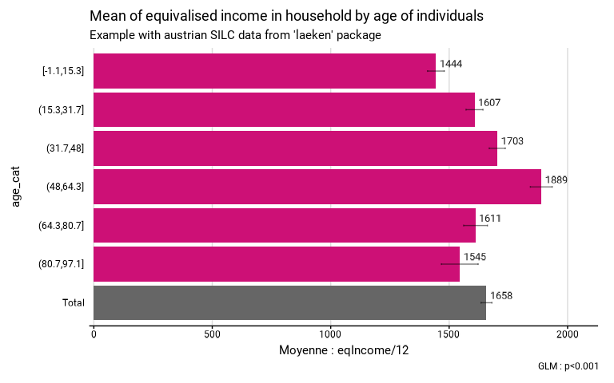

Function to compare means or medians among different groups based on complex survey data. It produces a list containing a table, including the confidence intervals of the indicators, a ready-to-be published ggplot graphic and a statistical test.
In case of mean comparison, the statistical test is a Wald test (using survey::regTermTest()). In case of median comparison the statistical test is a Kruskal Wallis test (using survey::svyranktest()). The confidence intervals and the statistical test are taking into account the complex survey design. In case of facets, the statistical test is computed on the total means or medians between facets (and not within facets). In case of second group (group.fill), no statistical test is computed.
Exporting the results to an Excell file is possible.
Usage
central_group(
data,
group,
quanti_exp,
type,
group.fill = NULL,
facet = NULL,
filter_exp = NULL,
...,
na.rm.group = TRUE,
na.rm.facet = TRUE,
total = TRUE,
reorder = FALSE,
show_ci = TRUE,
show_n = FALSE,
show_value = TRUE,
show_labs = TRUE,
total_name = NULL,
digits = 0,
unit = "",
dec = NULL,
col = NULL,
pal = "OBSS_Spring",
direction = 1,
desaturate = 0,
lighten = 0,
darken = 0,
dodge = 0.9,
font = "Roboto",
wrap_width_y = 25,
wrap_width_leg = 25,
legend_ncol = 4,
title = NULL,
subtitle = NULL,
xlab = NULL,
ylab = NULL,
legend_lab = NULL,
caption = NULL,
lang = "fr",
theme = "fonctionr",
coef_font = 1,
export_path = NULL
)
median_group(..., type = "median")
mean_group(..., type = "mean")Arguments
- data
A dataframe or an object from the survey package or an object from the srvyr package.
- group
A variable defining groups to be compared.
- quanti_exp
An expression defining the quantitative variable from which the mean/median is computed. Notice that if any observations with
NAin at least one of the variable inquanti_expare excluded for the computation of the indicators.- type
"mean"to compute mean by group ;"median"to compute median by group.- group.fill
A variable defining a second variable of groups to be compared.
- facet
A variable defining the faceting group.
- filter_exp
An expression filtering the data, preserving the design. Notice that
filter_expworks assrvyr::filter(): it excludes observations for whichfilter_expresults intoNA. It is often the case whenNAis present on one of the filter variables.- ...
All options possible in
srvyr::as_survey_design().- na.rm.group
TRUEif you want to remove observations withNAon the group and thegroup.fillvariables.FALSEif you want to create a group with theNAvalues for the group variable and agroup.fillwith theNAvalues for thegroup.fillvariable. Default isTRUE.- na.rm.facet
TRUEif you want to remove observations withNAon the facet variable.FALSEif you want to create a facet with theNAvalues for the facet variable. Default isTRUE.- total
TRUEif you want to compute a total,FALSEif you don't. The default isTRUE.- reorder
TRUEif you want to reorder the groups according to the mean/median.NAvalue, ifna.rm.group = FALSE, is not included in the reorder. In case of facets, the groups are reordered based on each median group. Default isFALSE.- show_ci
TRUEif you want to show the error bars on the graphic.FALSEif you don't want to show the error bars. Default isTRUE.- show_n
TRUEif you want to show on the graphic the number of observations in the sample in each group.FALSEif you don't want to show this number. Default isFALSE.- show_value
TRUEif you want to show the mean/median in each group on the graphic.FALSEif you don't want to show the mean/median. Default isTRUE.- show_labs
TRUEif you want to show axes and legend (in case of agroup.fill) labels.FALSEif you don't want to show any labels on axes and legend. Default isTRUE.- total_name
Name of the total displayed on the graphic. Default is
"Total"in French and in English and"Totaal"in Dutch.- digits
Number of decimal places displayed on the values labels on the graphic. Default is
0.- unit
Unit displayed on the graphic. Default is none (
"").- dec
Decimal mark displayed on the graphic. Default depends on lang:
","for fr and nl ;"."for en.- col
Color of the bars if there is no
group.fill.colmust be a R color or an hexadecimal color code. Default color used depends on type :"deeppink3"for mean and"mediumorchid3"for median. The colors of total andNAgroup (in case ofna.rm.group = FALSE) are always"grey40"and"grey". If there is agroup.fill,colhas no effect andpalargument should be used instead.- pal
Colors of the bars if there is a
group.fill.palmust be vector of R colors or hexadecimal colors or a palette from packages MetBrewer or PrettyCols or a palette from fonctionr. The color of missing values forgroup.fill(in case ofna.rm.group = FALSE) and for the total are always"grey"and"grey40". If there is nogroup.fill,palhas no effect andcolargument should be used instead.- direction
Direction of the palette color. Default is
1. The opposite direction is-1. If there is nogroup.fill, this argument has no effect.- desaturate
Numeric specifying the amount of desaturation where
1corresponds to complete desaturation (no colors, grey layers only),0to no desaturation, and values in between to partial desaturation. Default is0. It affects only the palette (pal, if there is a second group) and not the monocolor (col, if there is no second group). See colorspace::desaturate function from colorspace package for details. If desaturate and lighten/darken arguments are used, lighten/darken is applied in a second time (i.e. on the color transformed by desaturate).- lighten
Numeric specifying the amount of lightening. Negative numbers cause darkening. Value shoud be ranged between
-1(black) and1(white). Default is0. It doesn't affect the color ofNA(in case ofna.rm.group = FALSE). It affects only the palette (pal, if there is a second group) and not the monocolor (col, if there is no second group). See colorspace::desaturate for details. If both argument ligthen and darken are used (not advised), darken is applied in a second time (i.e. on the color transformed by lighten).- darken
Numeric specifying the amount of lightening. Negative numbers cause lightening. Value shoud be ranged between
-1(white) and1(black). Default is0. It doesn't affect the color ofNA(in case ofna.rm.group = FALSE). It affects only the palette (pal, if there is a second group) and not the monocolor (col, if there is no second group). See colorspace::desaturate for details. If both argument ligthen and darken are used (not advised), darken is applied in a second time (i.e. on the color transformed by lighten).- dodge
Width of the bars. Default is
0.9to let a small space between bars. A value of1leads to no space betweens bars. Values higher than1are not advised because they cause an overlaping of the bars.dodgedoesn't affect the spaces between second groups (group.fill). There is always no space between second groups.- font
Font used in the graphic. See
load_and_active_fonts()for available fonts. Default is"Roboto".- wrap_width_y
Number of characters before going to the line for the labels of the groups. Default is
25.- wrap_width_leg
Number of characters before going to the line for the labels of the
group.fill. Default is25.- legend_ncol
Number of columns in the legend. Default is
4.- title
Title of the graphic.
- subtitle
Subtitle of the graphic.
- xlab
X label on the graphic. As
ggplot2::coord_flip()is used in the graphic,xlabrefers to the x label on the graphic, after theggplot2::coord_flip(), and not to the x variable in the data. Default (xlab = NULL) displays, fortype = "mean", "Moyenne :" (iflang = "fr"), "Mean:" (iflang = "en") or "Gemiddelde:" (iflang = "nl"), or, fortype = "median", "Médiane :" (iflang = "fr"), "Median:" (iflang = "en") or "Mediaan:" (iflang = "nl"), followed by thequanti_expargument. To show no X label, usexlab = "".- ylab
Y label on the graphic. As
ggplot2::coord_flip()is used in the graphic,ylabrefers to the y label on the graphic, after theggplot2::coord_flip(), and not to the y variable in the data. Default (ylab = NULL) displays the name of thegroupvariable. To show no Y label, useylab = "".- legend_lab
Legend (fill) label on the graphic. If
legend_lab = NULL, legend label on the graphic will begroup.fill. To show no legend label, uselegend_lab = "".- caption
Caption of the graphic. This caption goes under de default caption showing the result of the statistical test. There is no way of not showing the result of the chi-square test as a caption.
- lang
Language of the indications on the graphic. Possibilities are
"fr"(french),"nl"(dutch) and"en"(english). Default is"fr".- theme
Theme of the graphic. Default is
"fonctionr"."IWEPS"adds y axis lines and ticks.NULLuses the default grey ggplot2 theme.- coef_font
A multiplier factor for font size of all fonts on the graphic. Default is
1. Usefull when exporting the graphic for a publication (e.g. in a Quarto document).- export_path
Path to export the results in an xlsx file. The file includes three (without
group.fill) or two sheets (with agroup.fill): the table, the graphic and the statistical test result.
Examples
# Loading of data
data(eusilc, package = "laeken")
# Creation of age categories
eusilc$age_cat <- cut(eusilc$age,
breaks = 6,
include.lowest = TRUE)
# Calculation of income means by age category with fonctionr, taking sample design into account
eusilc_mean <- mean_group(
eusilc,
group = age_cat,
quanti_exp = eqIncome / 12,
strata = db040,
ids = db030,
weight = rb050,
title = "Mean of equivalised income in household by age of individuals",
subtitle = "Example with austrian SILC data from 'laeken' package"
)
#> Input: data.frame
#> Sampling design -> ids: db030, strata: db040, weights: rb050
#> Variable(s) detected in quanti_exp: eqIncome
#> Numbers of observation(s) removed by each filter (one after the other):
#> 0 observation(s) removed due to missing group
#> 0 observation(s) removed due to missing value(s) for the variable(s) in quanti_exp
# Results in graph form
eusilc_mean$graph
#> Warning: Removed 6 rows containing missing values or values outside the scale range
#> (`geom_text()`).
#> Warning: Removed 1 row containing missing values or values outside the scale range
#> (`geom_text()`).

# Results in table format
eusilc_mean$tab
#> # A tibble: 7 × 8
#> age_cat mean mean_low mean_upp n_sample n_weighted n_weighted_low
#> <fct> <dbl> <dbl> <dbl> <int> <dbl> <dbl>
#> 1 [-1.1,15.3] 1444. 1409. 1479. 2720 1424958. 1358818.
#> 2 (15.3,31.7] 1607. 1571. 1643. 2944 1612502. 1549489.
#> 3 (31.7,48] 1703. 1669. 1737. 4025 2230581. 2163723.
#> 4 (48,64.3] 1889. 1843. 1935. 2817 1578046. 1517273.
#> 5 (64.3,80.7] 1611. 1561. 1662. 1847 1053098. 1001605.
#> 6 (80.7,97.1] 1545. 1467. 1622. 474 283037. 256754.
#> 7 Total 1658. 1635. 1681. 14827 8182222 8079226.
#> # ℹ 1 more variable: n_weighted_upp <dbl>